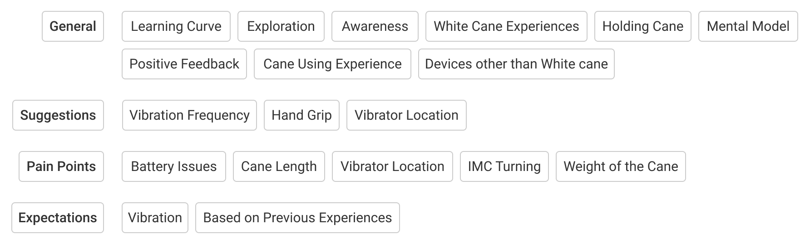

Overview
Multiple smart cane prototypes provide haptic vibration feedback to inform users about the upcoming obstacles, but limited research has been conducted to understand the user’s requirements and preferences. To address this issue, we conducted a usability study with the Intelligent Mobility Cane (IMC) prototype.
Role
Conducted Usability Study, Qualitative Data Analysis, Co-authored Case Study
Deliverables
CHI 2020 Case Study
Logistics
Duration: 2.5 Months
Team Members: Jagannadh Pariti
Advisor: Dr. Tae Oh
IMC Design
A foldable walking cane is used as a base to develop the IMC prototype
The cane is mounted with a Maxbotix MB1240 ultrasonic sensor and it is connected to the Arduino Uno microcontroller
Two vibrators on the handle are connected to the Arduino Uno. Each vibrator provides a vibration of 10000 rpm frequency when the user is 4ft away from the obstacle. This distance threshold is selected to give the participant time to react when an obstacle is detected
Usability Evaluation
The Usability Evaluation was divided into Pre-Task Interview, Course Navigation, and Post-Task Interview. Before conducting the usability study, we consulted with an Orientation and mobility specialist to understand how blind and low vision people are taught to use a white cane, which helped us in designing the test plan
Participant Characteristics
We recruited 11 participants from the Association for Blind and Visually Impaired with the following eligibility criteria:
Should be at least 18 years old
Should speak English
Should use a cane for daily navigation
Pre-Task Interview Insights
The participants were asked general questions like their height, years of experience using a cane and awareness about the smart cane. They were asked to show how they hold their walking cane and how they detect obstacles
2 out of 11 participants had previous experience with a smart cane through another study
None of the participants have used a smart cane previously as part of their daily routine
All the users have different personal preferences based on how they hold a cane, whether they use a foldable or non-foldable cane and their experience with other assistive devices
Course Navigation Insights
The participants walked along the obstacle path and audio/video data was collected during this time for analysis. The users evaluated the comfort level of the cane handle, the positioning of the vibrators and understanding of the haptic feedback.
The Path for the Usability Task

Participant Using IMC
Difficulty in interpreting the vibrations
4 participants stopped walking along the obstacle path because they were not sure when the IMC’s handle was vibrating
9 participants stopped and asked how to interpret the vibrations. Once their doubts were cleared, they continued to navigate the obstacle path and it appeared that they were using the vibrations to move forward. Some of them still tapped the obstacles with IMC as they continued walking
5 participants avoided touching at least one of the obstacles with the IMC
Post-Task Interview Insights
We asked the participants questions regarding the vibrator location, the vibration intensity and frequency, and suggestions on the haptic method. I open-coded the qualitative data in the following themes and then, using affinity mapping, grouped it into separate categories and subcategories
The participants’ previous experiences with their regular walking cane or any other assistive technologies were used as a reference and influenced the way they evaluated IMC
5 participants mentioned that the cane is heavier as compared to their own white cane. The weight of the cane matters because using heavy canes might cause serious wrist issues
IMC Handle Design Recommendations
Based on the feedback from the participants, they can rely on haptic vibration to inform them of upcoming obstacles in an indoor environment. We came to the following recommendations for the future cane designs:
Obstacle Detection and Notification System: The users should be able to attach the obstacle detection system to any cane because every user has a personal preference. An audio feedback option can be added to the handset. Also, it should be ensured that the users can choose the type of audio and between being notified using audio, haptic or both
Location of the Vibrators: The users should be able to adjust the location of the vibrators on the handset to their liking to minimize hand strain. The location of the vibrators should be marked in some way to ensure proper cane orientation. Also, different vibrators should be placed in various locations on the handset to indicate the direction of the obstacle
Vibration Patterns: The haptic feedback should have varying vibration patterns for different types of obstacles (eg: overhead obstacles, stairs). 2 participants indicated they could hear the vibrations more than feeling the vibrations, and it sounded similar to a tapping sound
REFLECTION
This was my first project focused on accessibility and it was a great learning experience. If I go back to this project, I'd like to work on the usability study plan because different scenarios were not considered such as the outdoor environment and crowdy places. Also, the feedback of the participants was based on their first time experience with the IMC. The results might vary if they used it for a longer time.